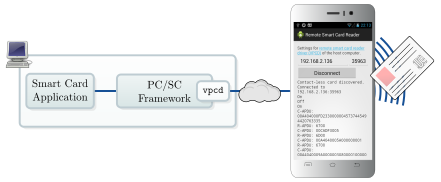
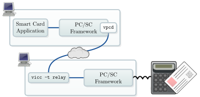

Remote Smart Card Reader¶
Allow a host computer to use the smartphone’s NFC hardware as contact-less smartcard reader. On the host computer a special smart card driver, vpcd, must be installed. The app establishes a connection to vpcd over the network when a contact-less card is detected.

Remote Smart Card Reader used to access a contact-less card
The Remote Smart Card Reader has the following dependencies:
NFC hardware built into the smartphone
Android 4.4 “KitKat” or CyanogenMod 11 (or newer)
permissions for a data connection (communication with vpcd) and for using NFC (communication to the card); scanning the configuration via QR code requires permission to access the camera
For remotely accessing a traditional smart card reader on one computer from an other computer, the Virtual Smart Card in relay mode can be used:

Virtual Smart Card used in relay mode to remotely access a card
Note
This software can actually be used in a relay attack allowing full access to the card. We discussed the impact especially on the Relay attack against the German ID card, but it generally concerns all contact-less smart cards.
Download and Install¶
The Remote Smart Card Reader is available on F-Droid 2.
To manually compile the app you need to fetch the sources:
git clone https://github.com/frankmorgner/vsmartcard.git
We use Android Studio 1 to build and deploy the application. Use
to select vsmartcard/remote-reader.
Attach your smartphone and choose .
On the host system, where the smart card at the phone’s NFC interface is relayed to, vpcd needs to be installed. It can be installed on Windows and Unix. On the host computer, vpcd-config prints a QR code to configure the Remote Smart Card Reader. Scan the configuration with the bar code scanner of your choice.
Question¶
Do you have questions, suggestions or contributions? Feedback of any kind is more than welcome! Please use our project trackers.